Galeri Kali Kebo Camping Ground
Jelajahi keindahan Kali Kebo Camping Ground melalui koleksi foto dan video. Temukan suasana alam, area camping, serta momen menarik di destinasi wisata Lumajang ini.
📸 Koleksi Foto Wisata
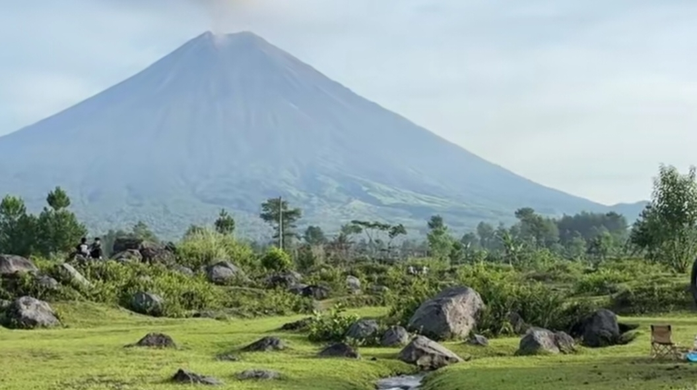
01. Suasana Alam
Menikmati suasana yang asri
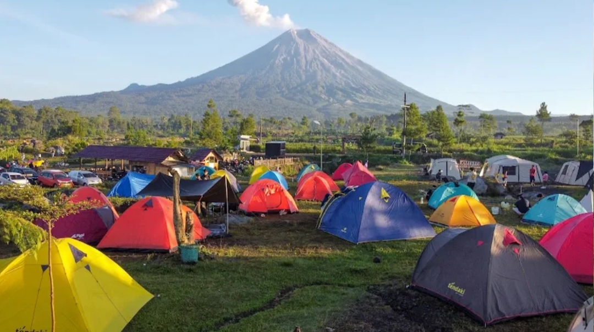
02. Area Camping
Tempat menikmati alam terbuka
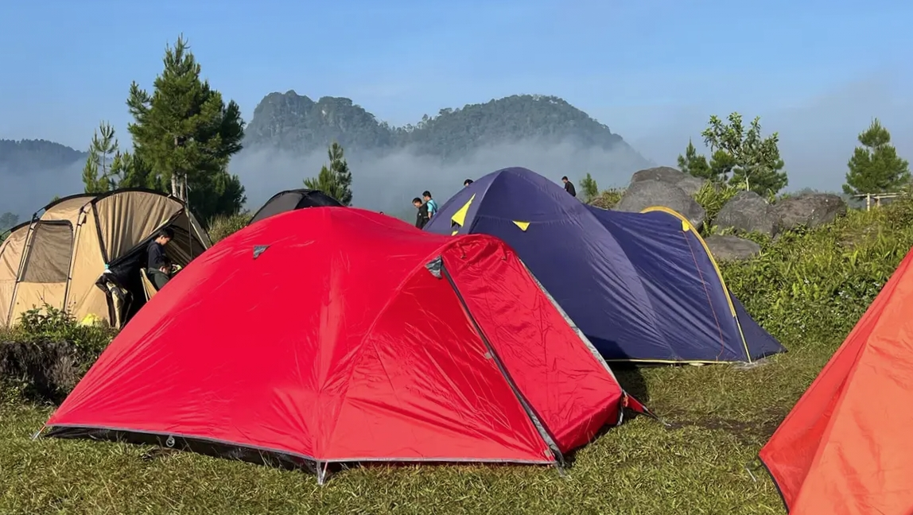
03. Tenda Camping
Pengalaman berkemah di alam
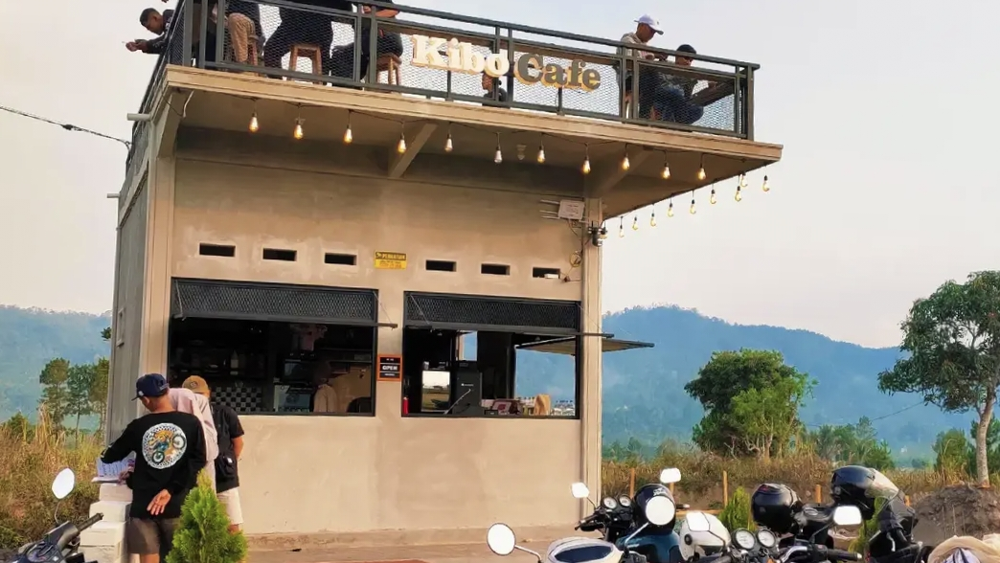
04. Cafe Kibo
Suasana cafe yang nyaman
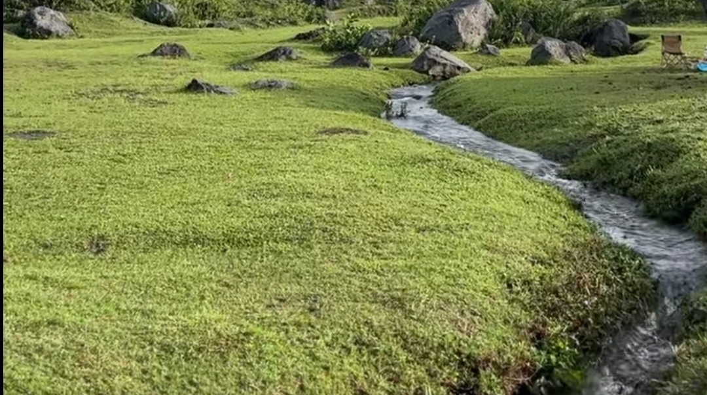
05. Aliran Sungai
Pesona kawasan sungai
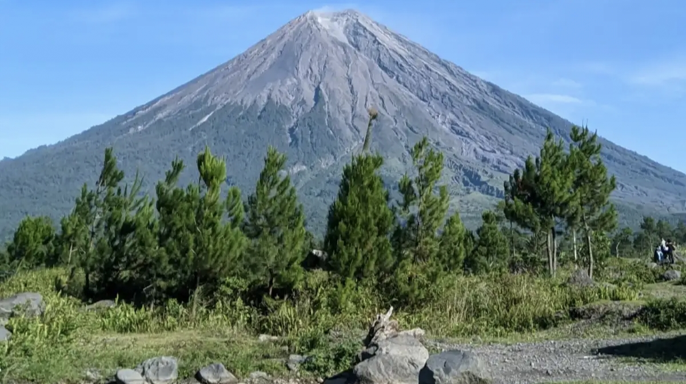
06. Panorama Pegunungan
Pemandangan alam sekitar
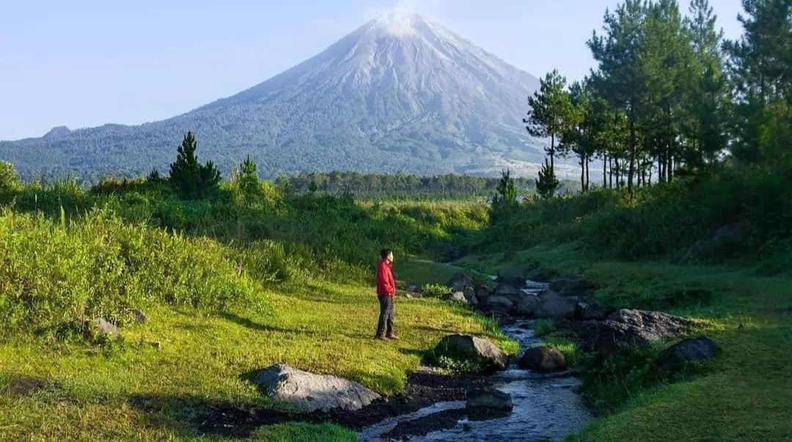
07. Lanskap Hijau
Keindahan lingkungan wisata
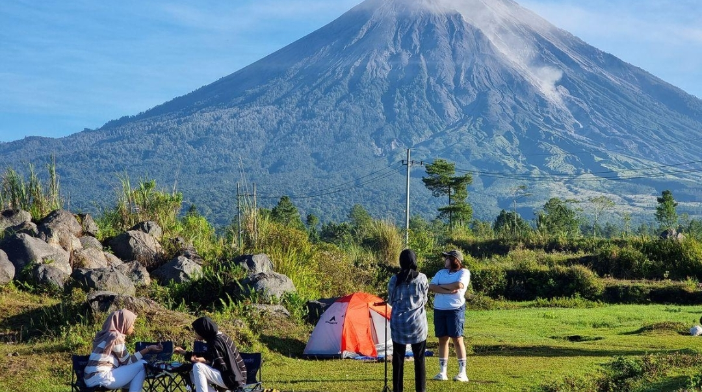
08. Aktivitas Pengunjung
Momen selama berwisata
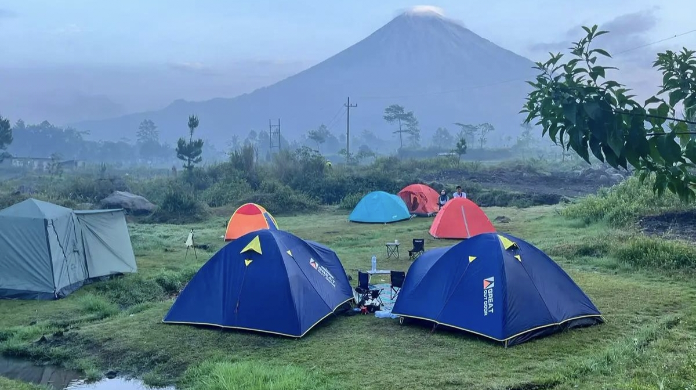
09. Suasana Berkemah
Menikmati waktu bersama
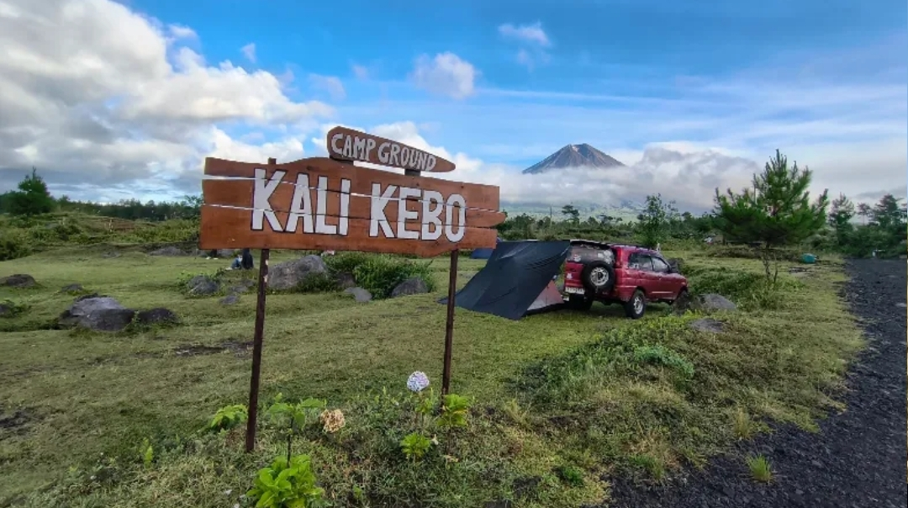
10. Sudut Wisata
Pesona dari sudut berbeda
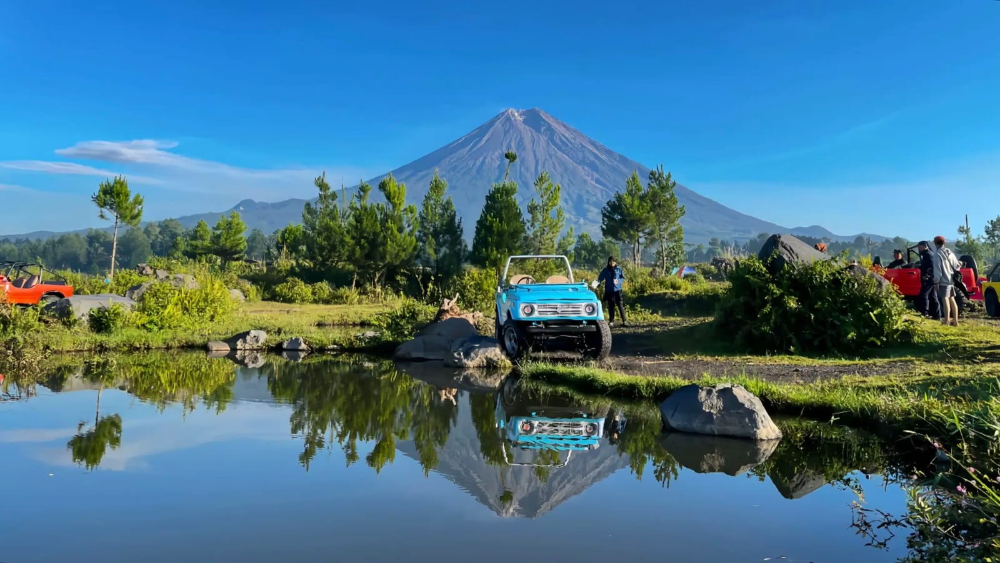
11. Pesona Alam
Keindahan alam Kali Kebo
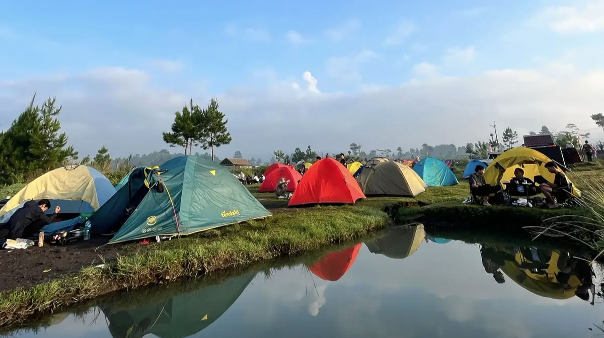
12. Kenangan Wisata
Dokumentasi perjalanan
🎬 Video Wisata
Video Kali Kebo Camping Ground
Saksikan suasana dan keindahan wisata melalui dokumentasi video.